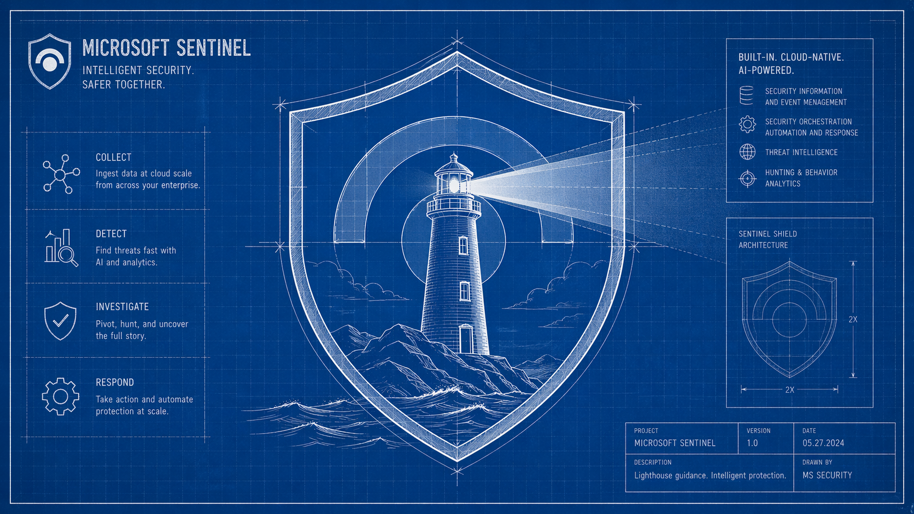

Detecting Azure Lighthouse Delegation Tampering with Microsoft Sentinel
When Your Window Into the Environment Gets Bricked
Azure Lighthouse is the backbone of many managed security service providers (MSSPs). It's what lets your SOC team monitor, investigate, and respond across dozens of customer tenants without juggling separate credentials for each one. But that same delegation mechanism is also a quiet, high-impact attack surface, and one that's frequently overlooked in detection engineering.
This post walks through a threat scenario we see in practice, and the two Analytic Rules we built in Microsoft Sentinel to catch it.
The Threat Scenario
Imagine this: your team manages security operations for a customer via Azure Lighthouse. Your delegated access covers their Sentinel workspace, their Log Analytics tables, their incident queue. Everything runs through that Lighthouse registration.
Now imagine someone, a rogue admin, a misconfigured automation, a threat actor who's already inside, or even a well-meaning but uninformed customer, modifies or removes that delegation. Your monitoring keeps running, your dashboards stay green, but your service is quietly degraded. You're no longer seeing what you think you're seeing. Alerts aren't firing. Incident response is impaired. And you may not know until something goes badly wrong.
The three actors most likely to trigger this (intentionally or not):
- The customer's own IT or admin team, making changes without coordinating with you
- A third-party MSP or integrator, onboarding their own Lighthouse delegation, potentially overlapping with or overriding yours
- A threat actor, attempting to blind your monitoring as part of a broader attack chain
All three scenarios produce the same type of activity in the Azure control plane: a write or delete operation against Microsoft.ManagedServices resources. And all three show up in the AzureActivity table in Microsoft Sentinel.
Detection Architecture
We built two complementary Analytic Rules to cover this threat. They share the same foundation but split on a single key variable: does the change originate from your known Sentinel resource group (your MSP's scope), or from somewhere else?
The Core Technique: Identifying Your Own Sentinel Resource Group
Both rules use a dynamic lookup to identify the resource group containing your Sentinel workspace, rather than hardcoding it. This makes the rules portable and maintenance-free:
let SentinelRG = toscalar(
Usage
| where TimeGenerated > ago(1d)
| where Solution == "LogManagement" and DataType == "SigninLogs"
| extend ResourceGroup = tolower(split(split(ResourceUri, "/resourcegroups/")[1], "/")[0])
| where isnotempty(ResourceGroup)
| summarize any(ResourceGroup)
);
This query looks at recent Usage table entries for your Log Analytics workspace and extracts the resource group name from the ResourceUri. The result (SentinelRG) is then used as a filter in the main query, either to match changes within your scope, or to catch changes outside it.
Detection 1: MSP Delegation Change Detected
What It Detects
Changes to Microsoft.ManagedServices resources (registration definitions and assignments) where the affected resource group matches your known Sentinel resource group. In other words: someone touched your delegation.
This covers both expected changes (your own team onboarding or offboarding a customer) and unexpected ones (a customer admin making unauthorised modifications). The rule fires on both write and delete operations with a successful status.
Why Both Expected and Unexpected?
Even authorised changes from your own MSP should generate an alert, you want a record. Onboarding and offboarding operations should be pre-announced and reconciled against the alert. Anything that doesn't match a known change window is an immediate investigation trigger.
The Query
The full detection query is available to download here.
let SentinelRG = toscalar(
Usage
| where TimeGenerated > ago(1d)
| where Solution == "LogManagement" and DataType == "SigninLogs"
| extend ResourceGroup = tolower(split(split(ResourceUri, "/resourcegroups/")[1], "/")[0])
| where isnotempty(ResourceGroup)
| summarize any(ResourceGroup)
);
AzureActivity
| where TimeGenerated > ago(1h)
| where CategoryValue == "Administrative"
| where ResourceProviderValue =~ "MICROSOFT.MANAGEDSERVICES"
| where isnotempty(ResourceGroup) and
isnotempty(SentinelRG) and
tolower(ResourceGroup) == SentinelRG
| extend
CallerType = tostring(parse_json(Authorization).evidence.principalType),
Registration = tostring(parse_json(Properties).resource),
UserName = iff(Caller contains "@", tostring(split(Caller, "@", 0)[0]), Caller),
UPNSuffix = iff(Caller contains "@", tostring(split(Caller, "@", 1)[0]), Caller)
| project TimeGenerated, OperationNameValue, Status=ActivityStatusValue, Caller, UserName,
UPNSuffix, CallerIpAddress, CallerType, Registration, ResourceGroup
| sort by TimeGenerated descKey Fields in the Output
| Field | What to Look At |
|---|---|
Caller |
Full UPN or service principal ID, is this your team? |
CallerIpAddress |
Does this IP belong to your management infrastructure? |
CallerType |
Is this a user, service principal, or managed identity? |
Registration |
Which Lighthouse offer / registration was touched? |
OperationNameValue |
Write vs. Delete, deletion is higher severity |
Triage Guidance
- Cross-reference with your change management process. Was this change scheduled?
- Validate the caller identity. A service principal making this change is unusual unless it's part of your automation pipeline.
- Check the source IP. Changes from unknown or residential IPs are a red flag.
- If the change was a deletion, act immediately. Your delegation may be gone.
Detection 2: Non-MSP Delegation Change Detected
What It Detects
Changes to Microsoft.ManagedServices resources where the resource group does not match your known Sentinel resource group. This means a Lighthouse registration you don't own was created, modified, or deleted, in a subscription you monitor.
This is the higher-severity of the two detections. Legitimate Lighthouse delegations from unknown providers should be rare and always pre-approved. In practice, this fires when:
- A customer onboards a second MSP without informing you
- An attacker establishes a backdoor delegation to a tenant they've compromised
- A misconfigured automation creates an unintended registration
Why This Is High-Fidelity
Unlike Detection 1, which includes routine MSP activity, Detection 2 has very few legitimate triggers. An unknown delegation appearing in your monitored subscription is almost always either a coordination failure (fixable quickly) or a security incident (act now).
The Query
The full detection query is available to download here.
let SentinelRG = toscalar(
Usage
| where TimeGenerated > ago(1d)
| where Solution == "LogManagement" and DataType == "SigninLogs"
| extend ResourceGroup = tolower(split(split(ResourceUri, "/resourcegroups/")[1], "/")[0])
| where isnotempty(ResourceGroup)
| summarize any(ResourceGroup)
);
AzureActivity
| where TimeGenerated > ago(1h)
| where CategoryValue == "Administrative"
| where ResourceProviderValue =~ "MICROSOFT.MANAGEDSERVICES"
| where isnotempty(ResourceGroup) and
isnotempty(SentinelRG) and
tolower(ResourceGroup) != SentinelRG
| extend
CallerType = tostring(parse_json(Authorization).evidence.principalType),
Registration = tostring(parse_json(Properties).resource),
UserName = iff(Caller contains "@", tostring(split(Caller, "@", 0)[0]), Caller),
UPNSuffix = iff(Caller contains "@", tostring(split(Caller, "@", 1)[0]), "")
| project TimeGenerated, OperationNameValue, Status=ActivityStatusValue, Caller, UserName,
UPNSuffix, CallerIpAddress, CallerType, Registration, ResourceGroup
| sort by TimeGenerated descTriage Guidance
- Identify the registration name in the
Registrationfield, does this correspond to a known provider? - Contact the customer immediately. Ask whether they authorised a new Lighthouse delegation.
- Review the caller and source IP. If neither is recognisable, escalate to an incident.
- Do not wait for confirmation before checking for lateral movement. If this is an attacker establishing a backdoor, they may already be active.
Deployment Notes
Rule Configuration Recommendations
| Setting | Detection 1 (MSP Change) | Detection 2 (Non-MSP Change) |
|---|---|---|
| Severity | Medium | High |
| Query Frequency | Every 1 hour | Every 1 hour |
| Lookup Period | Last 1 hour | Last 1 hour |
| MITRE ATT&CK | T1078.004 (Cloud Accounts) | T1098 (Account Manipulation) |
| Incident Creation | Yes | Yes |
Prerequisites
AzureActivitydata connector must be enabled and ingesting into your Sentinel workspace.- The
Usagetable must contain recent entries for your workspace (this is standard for any active Log Analytics workspace). - The account running these queries needs read access to both tables.
Limitations to Be Aware Of
- The
SentinelRGlookup usestoscalar(), if multiple resource groups appear in yourUsagetable (e.g. in a multi-workspace setup), theany()aggregation will pick one non-deterministically. In that case, consider hardcoding the resource group name or extending the lookup logic. - These rules look back only 1 hour, so they're designed for near-real-time detection. If you need historical coverage during initial deployment, adjust the
ago()window for a one-time backfill query. AzureActivitylogs are at the subscription level. Ensure your Lighthouse scope covers the subscriptions you want to monitor.
Broader Context: Lighthouse as an Attack Surface
Azure Lighthouse is fundamentally a trust relationship expressed as a set of ARM resources. Like any trust relationship, its integrity depends on both parties maintaining control. From a threat modelling perspective:
- Delegation modifications are privileged operations, they change who has access to what. They should be as tightly monitored as IAM changes in any other context.
- Service degradation is a valid attacker objective. Blinding a SOC before executing the next phase of an attack is a documented technique. Lighthouse tampering fits cleanly into this playbook.
- Your customers may not understand Lighthouse mechanics. Customer-side admins sometimes make changes without realising they're affecting managed service access. Detection here serves a dual purpose: security and service assurance.
Pairing these detections with a documented response procedure, and a clear communication path to the customer when an alert fires, turns a detection gap into a managed risk.
Summary
| Detection 1 | Detection 2 | |
|---|---|---|
| Trigger | Change to your MSP's Lighthouse delegation | Change to an unknown/third-party Lighthouse delegation |
| Fidelity | Medium (includes expected MSP activity) | High (unexpected delegations are rare) |
| Immediate Action | Validate against change management | Treat as potential incident; contact customer |
| Primary Risk | Unplanned access scope change | Backdoor delegation / unauthorised third party |
Both rules are lightweight, rely only on AzureActivity and Usage (standard tables in any Sentinel deployment), and require no additional data connectors. They can be deployed directly as Scheduled Query Rules via the Sentinel Analytics blade or through ARM/Bicep templates as part of your standard rule deployment pipeline.
If Lighthouse is part of your operational model, these detections should be part of your baseline ruleset.